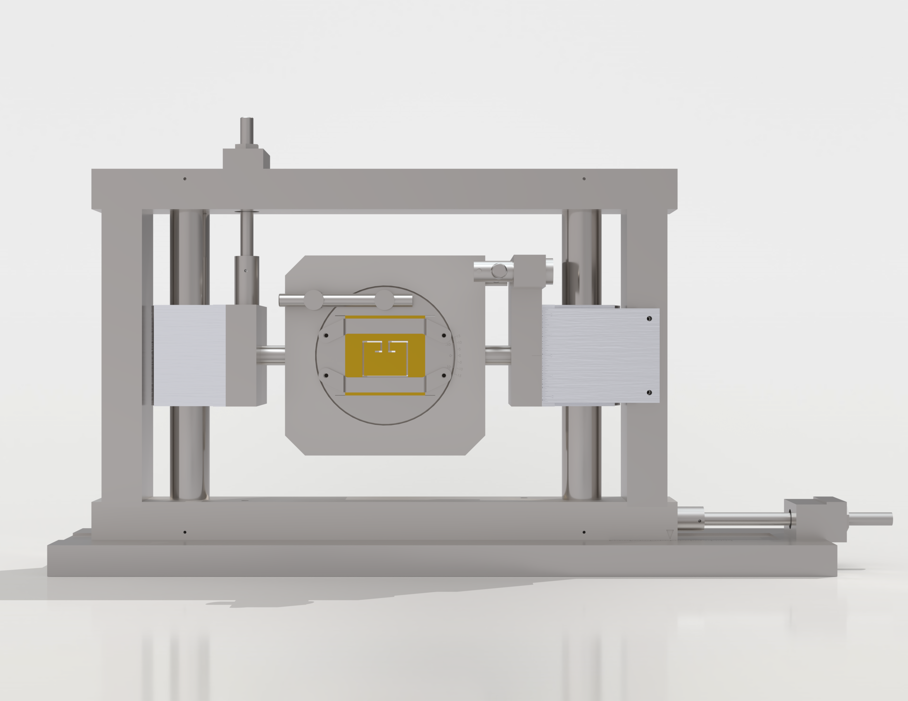
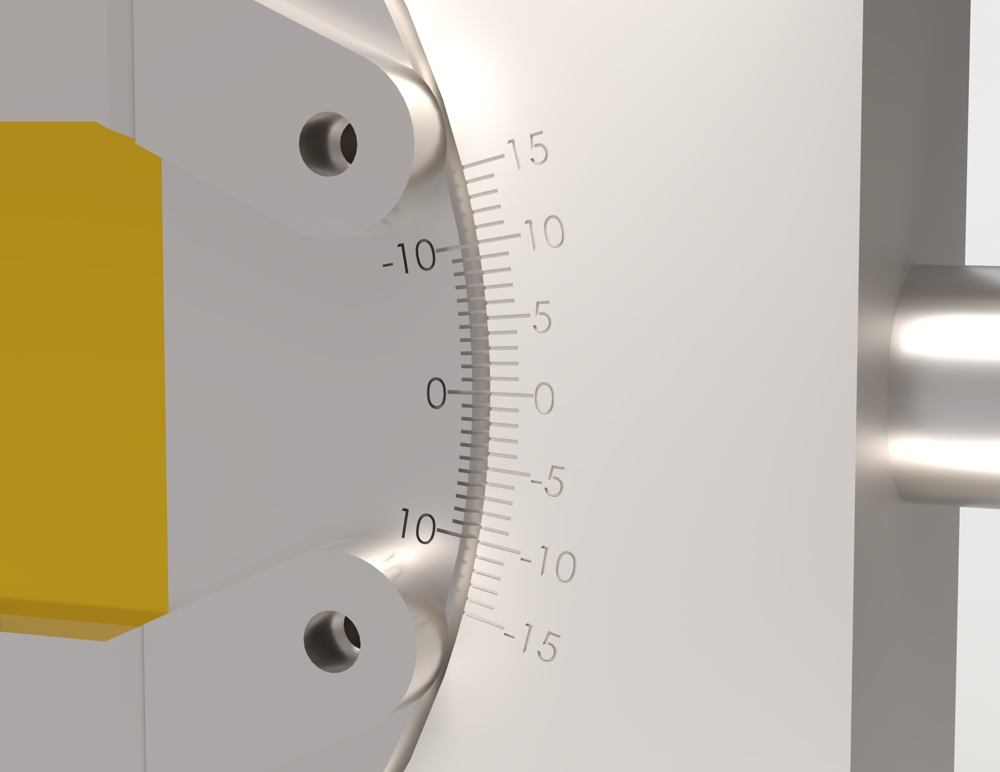

Modineer · 2024 · Tooling design
Roll Form Straightener Block Holder
A four-axis adjustable holder for the straightener block on a roll forming line, with a readable setting on every axis. Setup went from 1.5 hours to 30 minutes, and setup scrap from 25+ parts to 5.
RoleDesigned; had it built
Setup time1.5 h → 30 min
Setup scrap25+ → 5 parts
StatusIn use
Before
The holder was set by old, overwritten paint-pen marks, with no real process: adjust, measure the part, tweak whatever was out of spec. Four controls against many more ways for the part to measure out of spec made setup an underactuated problem.
The design
With x as the direction of part flow:
- Translation in y and z: regular scales.
- Rotation about x: a vernier scale.
- Rotation about y: a set spot for a depth gauge.

